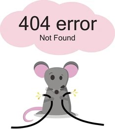

<ion-header>
  <ion-toolbar>
    <ion-title>Error</ion-title>
  </ion-toolbar>
</ion-header>

<ion-content>
  <div class="error-container">
    
    <p class="error-message">Lo sentimos, no tienes permiso para acceder a esta página o no se encontró.</p>
    <ion-button class="back-button" [routerLink]="['/presen']">Volver</ion-button>
  </div>
</ion-content>